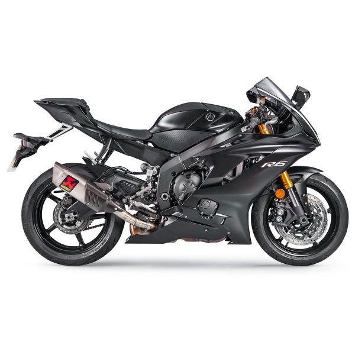

Racing Line (Titanium)S-Y6R9-APT
Suena que flipas
BIOGRAFÍA
Si hay un nombre que siempre he ligado a la competición en cuatro tiempos ese es Akrapovic. Desde hace más de una década la compañía eslovena es el absoluto referente en cuanto a sistemas de escape para motos de cuatro tiempos se refiere, incluso últimamente también en cuatro ruedas. Vemos el logo del escorpión por todas partes: en la Yamaha M1 de Jorge Lorenzo, en la KTM de Sandro Cortese, en la Moto2 de Marc Márquez, en los equipos oficiales de BMW y Aprilia en Superbikes etc… pero, ¿de dónde surgió todo esto? El éxito de la compañía de origen esloveno es el premio al trabajo bien hecho.
